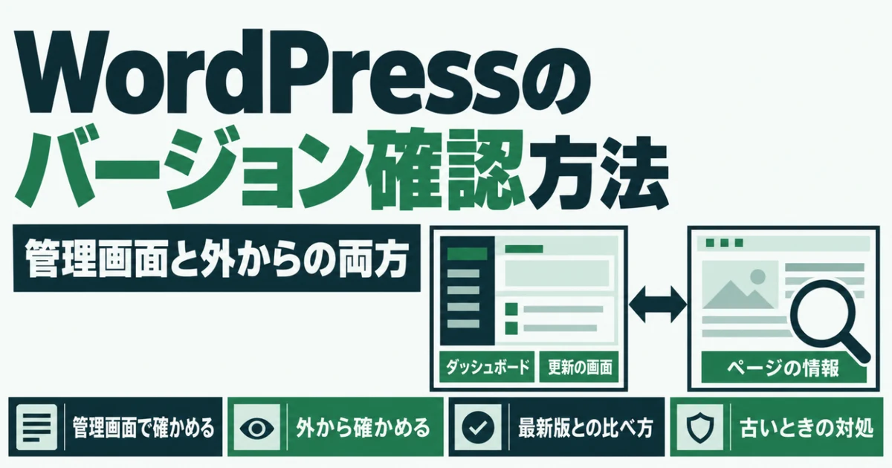
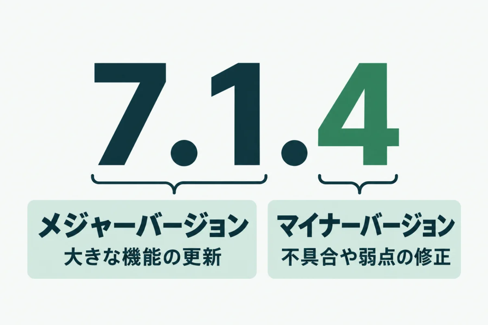
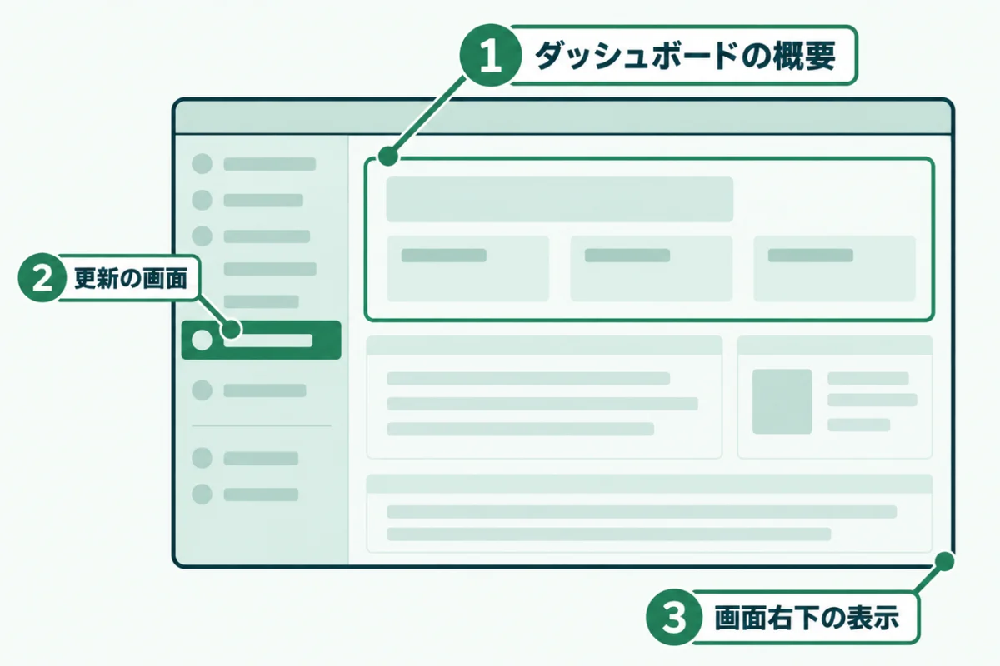
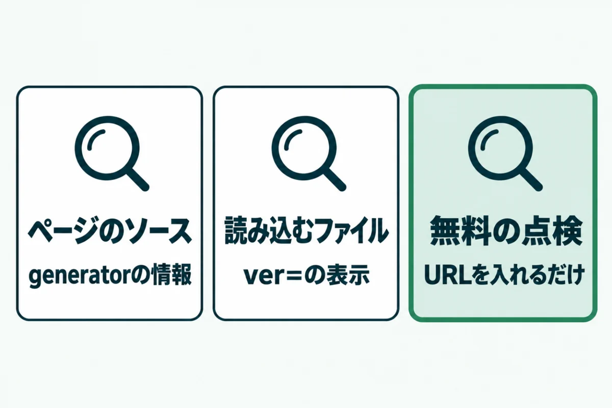
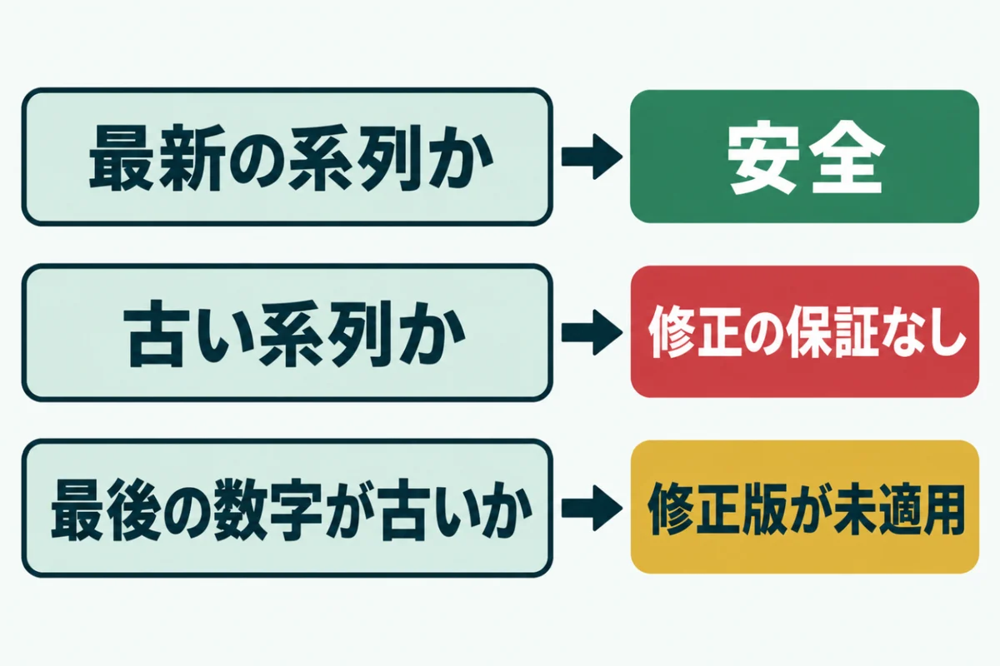
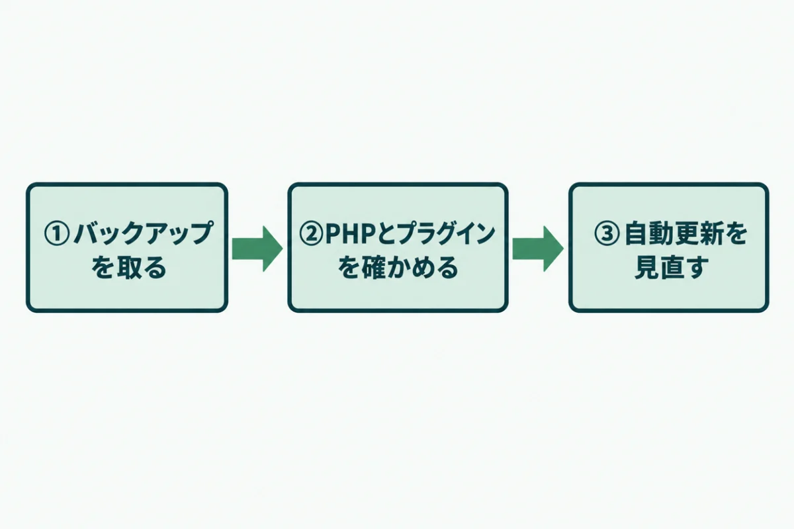

WordPressのバージョンを確認する方法（管理画面と外からの両方）

「うちのWordPressは、いまどのバージョンなのだろう？」と気になっていませんか？
制作会社に任せたままだと、管理画面のどこを見ればいいのかも分かりにくいものです。
この記事では、WordPressのバージョンを管理画面と外から確認する方法を紹介します。確認したあとに最新版と比べる方法と、古かったときの対処もまとめました。
ホームページの管理を任されている方が、5分ほどで今の状態を確かめられるようになります。
WordPressのバージョンを確認する前に知っておきたいこと

WordPressのバージョンを確認する前に、番号の読み方を知っておくと判断が早くなります。番号の前半と最後の数字では意味が違うからです。
番号の意味が分かれば、確認したあとに「急いで更新すべきか」を自分で判断できます。番号の読み方と、どのバージョンまでが正式に支えられているかを順に見ていきましょう。
バージョン番号の読み方
WordPressのバージョンは「7.1.4」のように、3つの数字で表されます。前半の「7.1」はメジャーバージョンと呼ばれ、新しい機能が入る大きな更新です。
最後の「4」はマイナーバージョンで、不具合や弱点を直すための小さな更新を表します。最後の数字が古いままだと、すでに直された弱点が残った状態です。マイナーバージョンは、初期設定では自動で更新される仕組みになっています。
最新の系列だけが正式なサポートの対象
WordPressの公式の説明では、正式に支えられているのは最新のメジャーバージョンだけです。古い系列にも修正が出ることはありますが、あくまで好意によるもので、保証はありません。
公式サイトは、最新の系列以外はどれも安全に使えるものではないとまで書いています。古い系列のまま使い続けるのは、避けたほうがよいでしょう。
WordPressのバージョンを管理画面で確認する3つの方法

WordPressのバージョンは、管理画面の3か所で確認できます。ログインできる方は、まず管理画面で確かめるのが確実です。
3か所とも、表示されるバージョンは同じです。いちばん見つけやすい場所を選んでください。管理画面に入れない場合は、外から確認する方法を使います。ログイン情報を制作会社が持っている場合も、外からなら自分で確かめられるでしょう。
① ダッシュボードの「概要」で確かめる
管理画面にログインすると、最初に「ダッシュボード」が開きます。その中の「概要」という枠に、使っているWordPressのバージョンとテーマの名前が表示されます。
「概要」の枠が見当たらない場合は、画面右上の「表示オプション」を開いてください。「概要」にチェックを入れると、消えていた枠がふたたび表示されます。ほかの枠を閉じていると、見落としやすい場所です。
② 「更新」の画面で確かめる
左のメニューの「ダッシュボード」から「更新」を開いてください。今のバージョンと、新しい版があるかどうかが表示されます。プラグインやテーマの更新も同じ画面にまとまっています。
新しい版がある場合は、更新を促すお知らせとボタンが出るはずです。ただし、ボタンをすぐに押すのは避けてください。更新の前にやることは、この記事の最後の章で説明します。
③ 画面右下の表示で確かめる
管理画面のどのページでも、いちばん下までスクロールしてみてください。右下に「バージョン 7.1.4」のような表示があります。手早く確かめたいときに便利です。
新しい版が出ているときは、ここに更新を促す文字が出ることもあります。どの画面からでも確かめられるため、ほかの作業のついでに見る習慣をつけておくとよいでしょう。
WordPressのバージョンを外から確認する方法

管理画面に入れない場合でも、WordPressのバージョンは外から分かることがあります。外から見えるなら、攻撃する側にも見えているという点に注意が必要です。
外からの確認は、持ち主でなくてもできます。制作会社にログイン情報を預けたままの場合も、自分で今の状態を知る手段になるでしょう。次の3つの方法があります。
ページのソースで確かめる
ブラウザでサイトを開き、右クリックから「ページのソースを表示」を選びます。表示されたソースの中で「generator」という語を探してください。
「WordPress 7.1.4」のように書かれていれば、それが使っているバージョンです。この表示は初期設定では出る仕組みですが、テーマやプラグインで消しているサイトもあります。見つからなくても、異常ではありません。
読み込んでいるファイルの「ver=」で確かめる
同じソースの中で「wp-includes」と書かれたファイルの名前を探します。末尾に「ver=7.1.4」のような表示が付いていることがあるでしょう。WordPress本体のファイルには、本体のバージョンが付くためです。
generatorの表示を消していても、こちらは残っていることが多いのが特徴です。ただし、プラグインのファイルにはプラグイン自身のバージョンが付くので、取り違えないようにしてください。
無料の点検で確かめる
ソースを読むのが手間な場合は、外からの点検を使うと早く確かめられます。スキゼロの無料簡易診断なら、URLを入れるだけで、本体のバージョンと最新版との差を判定します。
運営者の自社サイト2つで試したところ、1つは最新版でした。もう1つは1つ前の修正版のまま止まっていたため、すぐに更新しています。自動更新に任せていても、止まることがあるのです。
確認したWordPressのバージョンを最新版と比べる方法

WordPressのバージョンを確認したら、最新版と比べて、更新が必要かどうかを判断します。見るのは、系列が最新かどうかと、最後の数字が最新かどうかの2点です。
最新版の番号は、WordPress.orgの公式サイトで確かめられます。ニュースやブログの情報は古いこともあるので、比べるときは必ず公式の情報を使ってください。
最新版は公式サイトで確かめる
WordPress.orgのリリースの一覧には、過去のすべての版と公開日が載っています。いちばん上にあるものが最新版です。
2026年10月29日に、WordPress.orgの更新確認の仕組みで調べました。その時点の最新版は7.1.4です。7.1系でも最後の数字が4より小さければ、修正版が未適用ということになります。
2026年10月時点の主なバージョン
2026年10月29日時点で、各系列の最新の修正版は次のとおりです。正式な対象は7.1系だけで、ほかの系列は好意による修正にとどまります。
| 系列 | その系列の最新版 | 扱い |
|---|---|---|
| 7.1系 | 7.1.4 | 正式なサポートの対象 |
| 7.0系 | 7.0.8 | 修正は好意によるもの |
| 6.9系 | 6.9.11 | 修正は好意によるもの |
6.9系より古い系列を使っている場合は、早めに7.1系への更新を計画するのが安全です。古い系列ほど、PHPやプラグインとの相性の確認にも時間がかかります。
WordPressのバージョンが古いときの対処

WordPressのバージョンが古いと分かっても、すぐに更新ボタンを押すのは危険です。準備をしないまま上げると、表示が崩れたり画面が真っ白になったりします。
特に、何年も更新していないサイトは注意が必要です。PHPやプラグインが新しい版に対応していないと、更新した瞬間に画面が真っ白になることもあります。次の3つの順で進めてください。
① バックアップを取ってから更新する
更新の前に、サイトのファイルとデータベースを控えます。サーバー会社の自動バックアップがあっても、作業の直前に手動で取っておくと安心です。
戻せる状態を作ってから更新することで、万一表示が崩れても落ち着いて対応できます。マイナーバージョンの更新でも、この手順は省かないようにしましょう。控えは、パソコンなどサーバーとは別の場所にも保存しておくと確実です。
② PHPとプラグインの対応を確かめる
新しいWordPressは、古いPHPでは動かないことがあります。WordPress.orgは、PHP 8.3以上を推奨しています。サーバーのPHPが古い場合は、先にPHPを上げる必要があるでしょう。
プラグインも、長く更新されていないものは新しい版で動かないおそれがあります。配布ページで最終更新日と対応バージョンを確かめ、必要なら代わりのものを探してください。
③ 自動更新の設定を見直す
「更新」の画面では、メジャーバージョンも自動で更新するかどうかを選べます。小さな会社のサイトなら、少なくともマイナーバージョンの自動更新は止めないのが基本です。
自動更新に任せていても、何かの理由で止まることがあります。月に1回は管理画面か外からの点検で確かめると、取り残しを防げます。日を決めて、ほかの点検と一緒に行うと続けやすいでしょう。
URLを入れるだけで、本体のバージョンと最新版との差を含む8項目を無料で判定します。登録はいりません。
無料で診断するWordPressのバージョン確認に関するよくある質問
管理画面に入れなくても、WordPressのバージョンは分かりますか？
分かることがあります。ページのソースの「generator」という表示に、バージョンが書かれていることがあるからです。読み込んでいるファイルの「ver=」の表示も手がかりになります。スキゼロの無料簡易診断でも、URLを入れるだけで確かめられます。ただし、表示を消しているサイトでは、外からは分かりません。その場合は、管理画面にログインできる人に確かめてもらいましょう。
外からバージョンが見えるのは危険ですか？
最新版を使っていれば、見えても大きな問題にはなりにくいです。危ないのは、古いバージョンが外から見えている場合でしょう。攻撃する側は、弱点のある古い版のサイトを外からの情報で探しているためです。表示を消すことより、まず最新版に保つことを優先してください。そのうえで、generatorの表示を消すと、さらに狙われにくくなります。
WordPressは自動で更新されないのですか？
初期設定では、マイナーバージョンは自動で更新されます。メジャーバージョンを自動で更新するかどうかは、「更新」の画面で選べる仕組みです。ただし、サーバーの設定やプラグインの影響で、自動更新が止まっていることもあります。自動に任せきりにせず、定期的に確かめてください。止まっていても管理画面にお知らせが出ないこともあるため、注意が必要です。
バージョンを上げたら、サイトが崩れることはありますか？
あります。特に、何年も更新していないサイトや、長く更新されていないプラグインを使っているサイトは注意が必要です。更新の前にバックアップを取り、PHPとプラグインの対応を確かめてから進めましょう。不安な場合は、制作会社や専門家に相談するのが確実です。本番とは別の検証用の環境で先に試せると、さらに安心できます。
バージョンはどのくらいの頻度で確かめればいいですか？
月に1回を目安にしてください。WordPressの修正版は、決まった日ではなく、弱点が見つかったときに出ることが多いからです。管理画面の「更新」の画面を開くか、外からの点検を使えば、数分で確かめられます。ほかのサイト点検と同じ日にまとめると、忘れにくくなります。大きな弱点のニュースが出たときは、その日のうちにも確かめてください。
まとめ
WordPressのバージョンは、管理画面の3か所か、ページのソースや外からの点検で確かめられます。確認したら、系列と最後の数字の2点を最新版と比べてください。
正式なサポートの対象は最新の系列だけで、2026年10月29日時点では7.1系です。古かった場合は、バックアップとPHP、プラグインの確認を済ませてから更新しましょう。
まずは今日、管理画面の右下か無料簡易診断でバージョンを確かめるところから始めてください。
まずは、今の状態を知るところから。
URLを入れるだけで、数十秒で判定が出ます。登録はいりません。